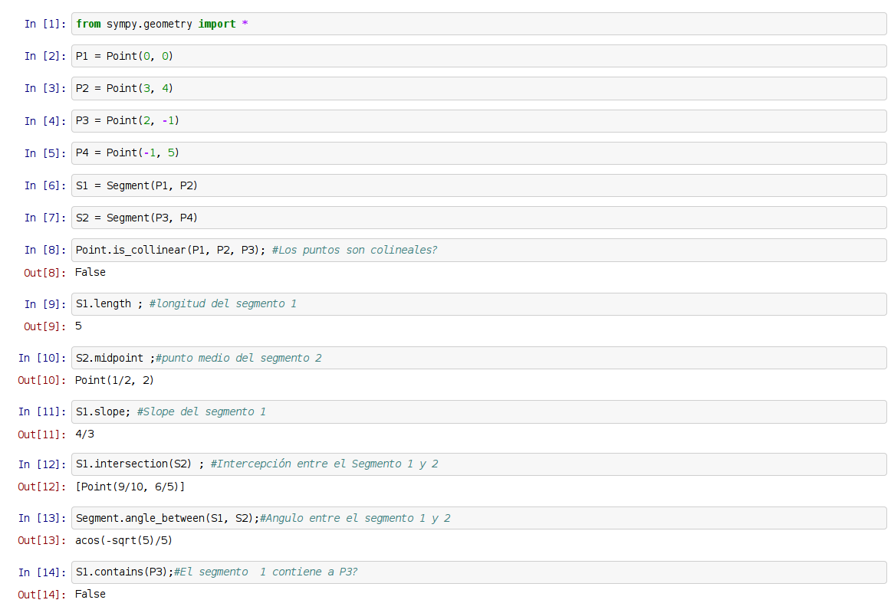

En los artículos anteriores se trataron los temas de como resolver límites, derivadas, integrales y resolución de sistemas de ecuaciones lineales, ahora se explicará el uso de Sympy en geometría analítica.
Los artículos sobre geometría analítica se basan en un artículo en inglés Computational Geomtry in Python.
En este artículo se explicará el manejo de segmentos.
Se inicia ipython notebook (si desea usar el archivo de este artículo lo puede descargar desde el siguiente enlace).
A continuación se muestra el código del script:
#!/usr/bin/env python
from sympy.geometry import *
#Definicion de puntos
P1 = Point(0, 0)
P2 = Point(3, 4)
P3 = Point(2, -1)
P4 = Point(-1, 5)
#Definicion de segmentos
S1 = Segment(P1, P2)
S2 = Segment(P3, P4)
print Point.is_collinear(P1, P2, P3); #Los puntos son colineales?
print S1.length ; #longitud del segmento 1
print S2.midpoint ;#punto medio del segmento 2
print S1.slope; #Slope del segmento 1
print S1.intersection(S2) ; #Intercepcion entre el Segmento 1 y 2
print Segment.angle_between(S1, S2);#Angulo entre el segmento 1 y 2
print S1.contains(P3);#El segmento 1 contiene a P3?
El resultado de ejecutar el script se muestra a continuación:
False
5
Point(1/2, 2)
4/3
[Point(9/10, 6/5)]
acos(-sqrt(5)/5)
False
La siguiente imagen muestra la ejecución del notebook:

¡Haz tu donativo! Si te gustó el artículo puedes realizar un donativo con Bitcoin (BTC) usando la billetera digital de tu preferencia a la siguiente dirección: 17MtNybhdkA9GV3UNS6BTwPcuhjXoPrSzV
O Escaneando el código QR desde la billetera:

Comments !